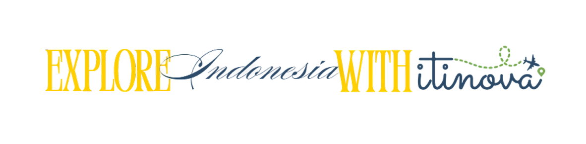

Scan Destination
Arahkan kamera ke landmark atau tempat wisata
Klik "Mulai Kamera" untuk memulai deteksi
-
Belum ada deteksi
Transportasi Umum
- Arahkan kamera ke tempat wisata
Tempat Wisata Sekitar
- Arahkan kamera ke tempat wisata
Tips Traveler: Pastikan pencahayaan cukup & objek terlihat jelas untuk hasil deteksi maksimal